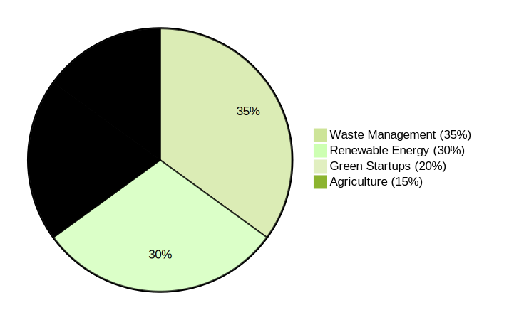

Why Policy Matters
Robust policies embed circular principles in waste management, energy, and business innovation. Goa’s local initiatives pair with national mandates to create environments where green enterprises thrive.
Goa State Policies
Plastic Waste Management
Bans single-use plastic, enforces EPR, and runs coastal cleanup drives.
Solar Incentives
Subsidies for rooftop solar, net metering, and green building ratings.
Green Procurement
Eco-friendly purchase mandates for all government agencies.
India National Policies
Resource Efficiency Policy
National framework for sustainable production, consumption, and waste reduction.
Startup India (Green)
Tax breaks, grants, and incubation for clean-tech and circular startups.
Swachh Bharat Mission
Countrywide sanitation, waste segregation, and recycling infrastructure.
E-Waste Rules
EPR for electronics, safe recycling, and formal collection networks.
Key Comparisons: Goa vs. India
| Area | Goa | India |
|---|---|---|
| Waste Management | Advanced EPR, door-to-door collection, pilot composting | National rules, varied state enforcement |
| Renewable Energy | Rooftop solar incentives, EV pilots | National Solar Mission, wind & hydro targets |
| Green Startups | State incubators, eco-tourism grants | Startup India green track, national funding |
Policy Impact: People Benefited
Government initiatives in circular economy and green entrepreneurship have positively impacted millions across India
Sector-wise Distribution
Future Projections by 2050
Upcoming Policy Highlights
Goa Circular Economy Roadmap
Mandates product take-back, sets up repair hubs, and integrates circular targets into state planning.
India Net-Zero by 2070
Draft sectoral decarbonization plans with embedded circular economy milestones across industries.
EPR Expansion
Extends Extended Producer Responsibility to electronics and textiles under a unified national framework.